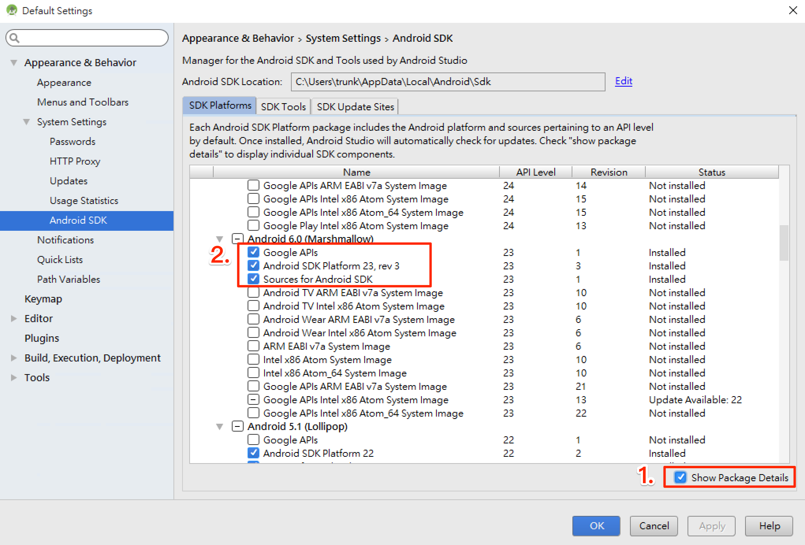
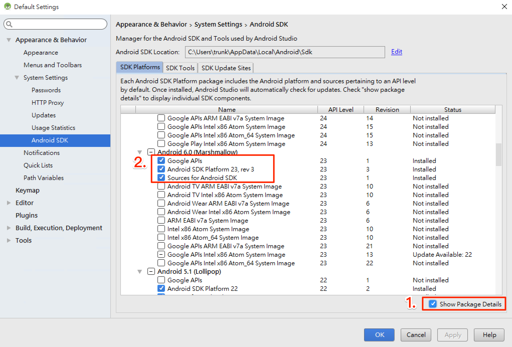
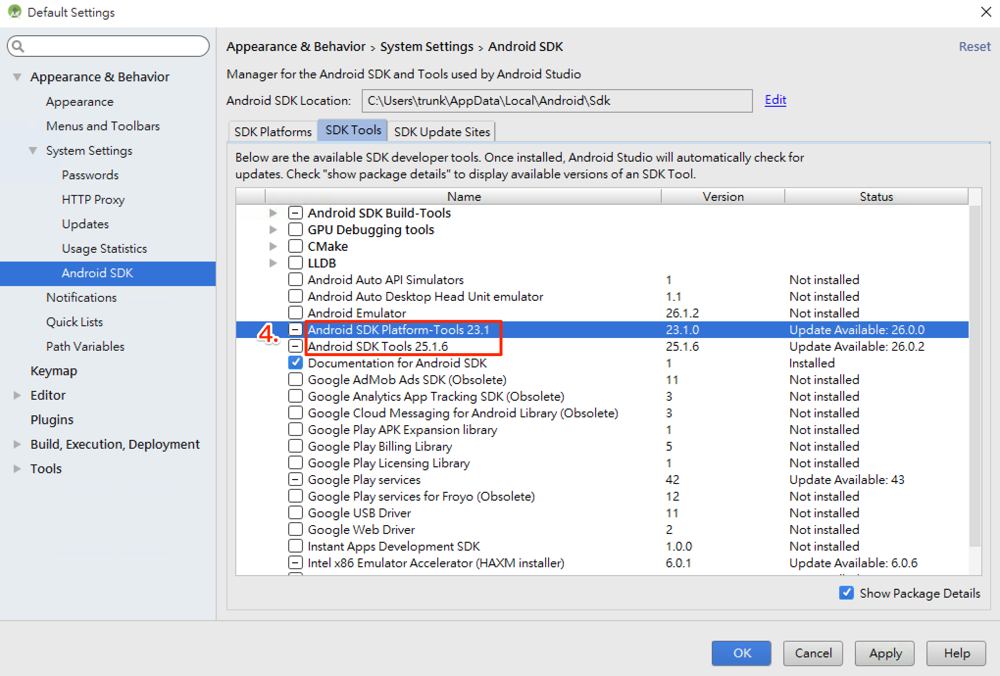
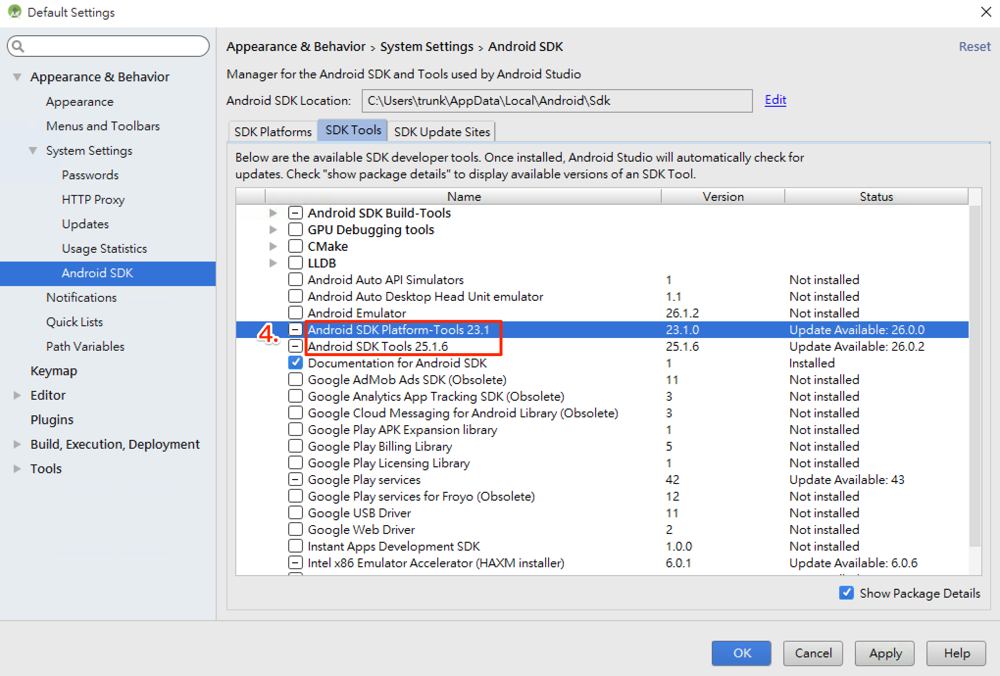

開發環境
基本系統環境
- python2
- jdk8
- Homebrew
Node
install NVM
Node Version Manager, 管理 Node 的工具，
Windows
Mac
curl -o- https://raw.githubusercontent.com/creationix/nvm/v0.33.6/install.sh | bash
設定環境變數 (~/.bash_profile, ~/.zshrc, ~/.profile, or ~/.bashrc)
export NVM_DIR="$HOME/.nvm"
[ -s "$NVM_DIR/nvm.sh" ] && . "$NVM_DIR/nvm.sh" # This loads nvm
source ~/.bashrc
install Node
nvm install 8
Android SDK
React Native 目前需要 Android Studio2.0 或更高版本。
- 下載 Windows Android Studio https://developer.android.com/studio/index.html
- 安裝 Android Studio - 教學影片 https://developer.android.com/studio/install.html
- 安裝 SDK
 SDK Platforms 選擇 Google APIs 、 Android SDK Platform 23

SDK Tools 選擇 Android SDK Build-Tools 23.0.1
SDK Platforms 選擇 Google APIs 、 Android SDK Platform 23

SDK Tools 選擇 Android SDK Build-Tools 23.0.1
 

Android 環境變數
確保 ANDROID_HOME 環境變數跟 SDK 路徑一致
Windows
控制台 > 系統及安全性 > 進階系統設定 > 進階 > 環境變數 > 新增

控制台 > 系統及安全性 > 進階系統設定 > 進階 > 環境變數 > 選擇 PATH > 編輯
在後方新增;C:\Users\使用者名稱\AppData\Local\Android\sdk\platform-tools;C:\Users\使用者名稱\AppData\Local\Android\sdk\tools
Mac
開起 ~/.bashrc 或 ~/.zshrc 或 ~/.profile 在最後加上
export ANDROID_HOME=${HOME}/Library/Android/sdk
export PATH=${PATH}:${ANDROID_HOME}/tools
export PATH=${PATH}:${ANDROID_HOME}/platform-tools
Android 虛擬機
- 註冊、下載 genymotion https://goo.gl/H4elWA
- 新增虛擬機

Xcode
- 從 App Store 安裝 Xcode
- 安裝 Xcode Command Line Tools, Xcode > ToolBar > Locations > Preferences

xcode-select -p，確認是否有安裝完成，安裝完成會回傳/Applications/Xcode.app/Contents/Developer- brew install watchman -
Tools
- VS code
- React Native Tools: https://goo.gl/FRhoCI
- ESLint https://goo.gl/GonQQ9
免環境快速練習
CRNA
npm install -g create-react-native-app
create-react-native-app AwesomeProject
cd AwesomeProject
npm start
Expo snack
Expo Snack: https://snack.expo.io/